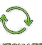

Antigravity
Orchestration / Automation
Workflow Execution
RUN FLOWS

AUTOMATEMONITOR
RETRIES
Mission / structure first
Confirm the whole structure first. Then allocate bounded, independently reviewable Agent Team workstreams.
Task intake / dynamic blueprint
Choose a bounded template, name the media references, and preview the finite Graph that will be confirmed before any runtime allocation.
Graph admission / shape before fan-out
Partition from the real dependency graph, isolate structural hubs, and treat the critical path as a floor. Coupled work stays serial when parallelism cannot pay back its coordination tax.
The animated return arrow is a bounded Loop Engineering motif. The canonical Graph below remains a finite acyclic DAG.
Mission contract
Forward-only mission flow
Canonical static DAG
Every node has one owner, typed payloads, finite budgets, a verifier, and an explicit recovery path.
Beginner / Lego mode
Choose a ready-made block. The editor connects it, adjusts its finite budget, checks the whole graph, and commits only when every rule still passes.
Add a small, reversible pattern to the current valid blueprint.
Each button shows the budget it will add before you choose it.
Blocks on the same row may run independently. A merge block waits for every declared input.
Typed dependencies
| From | To | Type | Payload schema | Condition | Actions |
|---|
Multi-input gates
Agent Teams Command
Strategic control and integration stay serial. Independently ownable execution and review may run in parallel.
Confirmation boundary
Validate and confirm the current mission structure before editing the Agent Team command.
Harness runtime adapters
Named runtimes advertise unverified capability hints here; the Harness probes them and selects a compatible route only after the confirmed blueprint is handed off. Graph and workstream owners remain vendor-neutral.
Command program
Typed IPC
Owned execution
Each card owns one isolated artifact and carries its own verifier, budget, and stop condition.
Promotion boundary
The browser exports a command pack. Your runtime harness remains responsible for recruiting workers, permissions, scheduling, and cleanup.
Presentation model
Presentation-only changes do not invalidate a confirmed graph. Raw JSON exposes every persisted field without enabling HTML, CSS, or script injection.
Visual system
Canonical editor
Apply a valid JSON object to edit fields not exposed in the guided forms. Imports never trust confirmation or handoff status, and user-controlled HTML/CSS/JavaScript is not executed.
Maximum 1 MiB · 24 nesting levels · prototype keys rejected.